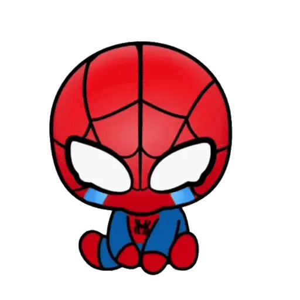

hi mantanku
aku tau kita seharusnya uda ga perlu kaya gini, tapi aku cuma minta waktu sebentar buat baca ini.
aku tau kita seharusnya uda ga perlu kaya gini, tapi aku cuma minta waktu sebentar buat baca ini.


aku sadar selama ini banyak menyepelekan kamu, banyak bikin kamu sakit hati. Aku cuma mau ngaku kalau aku emang salah, maaf yaa🥺

aku tau kata maaf ga langsung menghilangkan rasa kecewa kamu, tapi aku benar benar akan berubah lebih baik, dibalik itu kamu mau kembali lagi atau tidak itu hak kamu yaa☺️
maaf ya uda bikin km risih selama ini..
aku emang terlalu berekspektasi terlalu tinggi ke kamu, Ri. padahal harusnya dari awal aku salah. aku juga sadar kehadiran aku uda ga diharepin kamu lagi dan km mengharapkan orang lain.
hhe, aku sadar deh sekarang posisi aku dimana. kemarin mah belum tau posisi aku dimana karena aku masih berharap lebih ke kamu.
makasi juga aku bisa ngerasain perasaan yang sakit berkali-kali lipat hehe. aku nikmatin sakit ini kok.
aku harap kamu bahagia ya kedepannya. kejar lagi aja cinta yang emang dari awal bukannya untuk aku.
belajar turunin ego ya buat cewe kamu nanti, kasian.
kamu sehat-sehat juga yaa. rokoknya minum, obatnya juga, begadang apalagi kurangin yaa. km bisa lebih baik kok. hidup lah layaknya manusia hidup, Ri.. jangan negatif terus hhehe ☺️
lupain kenangan yang buruk tentang hubungan kita ya. jangan dijadiin trauma untuk kedepannya. trauma itu gimana mindset kamu sendiri, jadi pelan-pelan lupain yaa.
kenangan indah kita kalau bisa lupain juga. inget juga gapapa sih, karena aku selalu ada di sini buat kamu.
aku pasti akan menaruh ruang di hati aku buat kamu. takut kamu balik lagi ke aku? jangan ragu untuk pulang yaa? hhee. tapi aku ga berharap lebih lagi kok buat ini.
aku harap kamu bahagia terus, seneng terus, pokoknya happy always, everything!!
oiyaaa, lanjutin les kamu!! gimana si katanya mau kerja di luar negeri tapi masih bandel buat les doang!!
emm terakhir dehh.. maaf yaa untuk rasa sakit yang kamu alamin.
tapi dibalik kesalahan itu, rasa sayang dan cinta aku begitu besar buat kamu, Fahri.
walaupun keliatannya aku kaya ga cinta? tp yaa ini lah aku. aku akan mencintai orang itu kalo dia mencintai aku lebih besar juga hehehe 😗
jangan lupain aku tapi yaa?
aku tau gengsi kamu itu gede banget buat aku, tapi gapapa. mungkin emang kamu sekecewa itu sama aku yaa, sampe bisa segininya.
terakhirrr lagii.....
i love u Fahri, makasi uda pernah hadir di hidup aku.
kamu laki-laki yang bisa bikin aku sampe selove bombing ini hehhehe. keren loh,,, proud of u!!
semangatt juga yaaaa untuk menjalani hari-harinya nanti!! ☺️
semoga kamu selalu bahagia yaa, kalau ada apa' kamu bisa balik lagi ke aku, aku akan selalu ada untuk kamu☺️